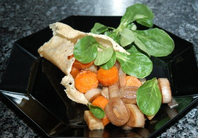

| Zutaten für 4 Personen: | |
| 200 g | geriebener Parmesan |
| 1/2 | Lauch |
| 1/2 | Sellerie |
| 1 grosses | Rüebli |
| 1 | gelbes Rüebli |
| Olivenöl | |
| Aceto Balsamico | |
| Salz, Pfeffer | |
| Nüsslisalat und Radenfäden zum garnieren | |
Parmesan in einer kalten Bratpfanne mit intakter Versiegelung ausstreuen und anschliessend auf dem Herd erhitzen bis er schmilzt und leicht bräunlich wird. Mit dem Spachtel vorsichtig herausheben und in einer Tasse zu einem Körbchen formen. Erkalten lassen.
Das Gemüse in Salzwasser kurz knackig kochen und anschliessend im noch warmen Zustand mit Olivenöl, Aceto Balsamico, Salz und Pfeffer abschmecken. Das Gemüse im Körbli anrichten, mit Nüsslisalat und Randenfäden ausgarnieren.
Werbebroschüre für Pfannen
Schmeckt fein. Das abschreckende Basteln des Körbchens ist gar nicht so schwer. RE, 28.10.2007
@LINKBACK_TAG@ @WAKELOCK@